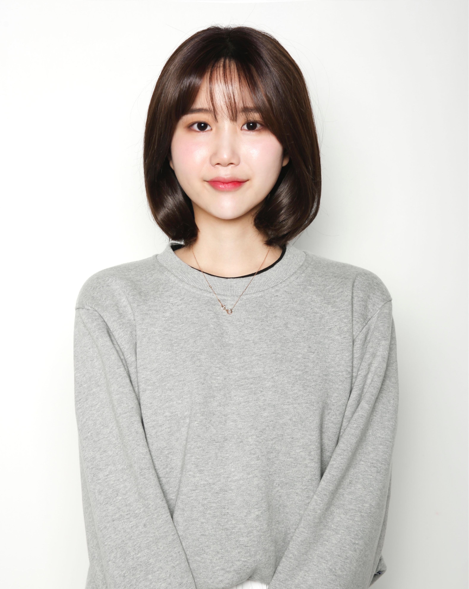

안녕하세요 저는 서지혜입니다.처음과 끝이 같은 사람이 되고 싶습니다. 한결같다는 것은 좀 지루하거나 뻔할 수도 있지만 어떤 사람이나 일에 대해서 한결같다는 최고의 칭찬이라고 생각합니다. 저는 처음이나 나중이나 초심을 잃지 않고 일에 임하려고 노력하는 사람입니다. 일을 처리하는 데도 일관성 있게 일정한 규칙을 가지고 계획하고 진행하며 제가 맡은 일에 관한 관심과 책임 역시 처음과 끝을 같게 하려고 늘 노력합니다. 입사 후 이를 바탕으로 필요한 전문지식을 쌓아 발전해나가겠습니다. 또 신입사원의 모습을 벗어나 한 명의 직원으로서 책임을 다하도록 하겠습니다. 입사 5년 후에는 위기 상황에 대한 재빠른 대처를 통해 업무를 원활하게 수행할 수 있는 '전문가'로서, 회사의 비전을 나의 비전처럼 여겨 함께 성장해 나갈 수 있는 사람이 되겠습니다.
